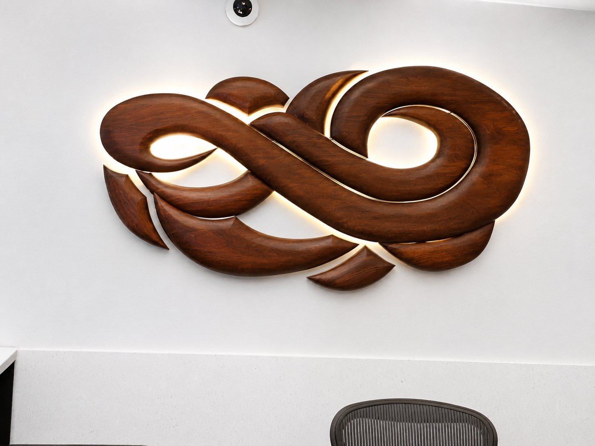
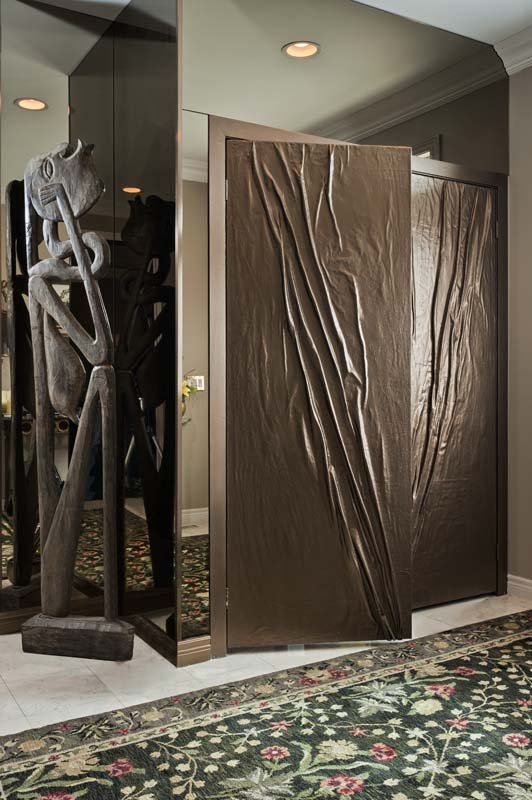

About
The Story Behind Montdor Interiors
A lifelong instinct for beautiful spaces.
"My first design critique happened at age five, when my mother brought home a shower curtain I found aesthetically unacceptable...
My response, involving a pair of scissors, was swift and decisive.
Thankfully, my methods have evolved, but my passion for beautiful spaces has not. Today, household sabotage is reserved only for demolition days!
Fortunately, I also had a gentler side. I was fascinated by the spiral of a shell, by the ripple folds of waves and waterfalls, by the colours and shapes of flora and fauna.


Inspired by a snail shell (and pretzels!!)
Designed as the signature statement piece for a Toronto condo lobby, this custom wall sculpture creates a memorable focal point behind the reception desk, seamlessly complementing the existing artwork and establishing a strong visual anchor for the space.

Inspired by the movement and rhythm of ocean waves, these one-of-a-kind custom closet doors transform a functional element into a sculptural architectural feature.
The dramatic, textured panels capture light and shadow as the 'waves' flow diagonally across the surface, creating depth and movement within the room. Positioned beside a primitive figurative sculpture, the doors become part of a curated composition where art and interior architecture coexist.
Every design decision asks one simple question: Will this make life better for the people who live or work here?
Because life doesn't happen in showrooms. It happens at home and at work.
Whether designing a full renovation, a custom kitchen, legal offices or a teenager's chill room, our process begins with understanding our clients: their vision, their lifestyle, and how they interact in their space.
From there, we collaborate closely with trusted artisans and skilled tradespeople whose craftsmanship reflects the same attention to detail and care that defines every Montdor Interiors project. The result is a home or workplace that feels effortless, personal and enduring: a space as functional and safe as it is beautiful.
Personal Rule: If it doesn't serve a role or spark joy, it's probably a candidate for demolition day!"
Meet Sheila
Sheila is an award-winning designer, who has lectured, presented design seminars to both professionals and lay people and wrote a monthly column in JTO magazine. She appeared weekly on the ZELDA show on CHIN radio 100.7 FM for 9 years. Her one-of-a-kind vanities and cabinets grace countless homes and offices. She has developed a reputation for creating unique roomscapes that possess a timeless quality and are based on sound design principles rather than on trends.